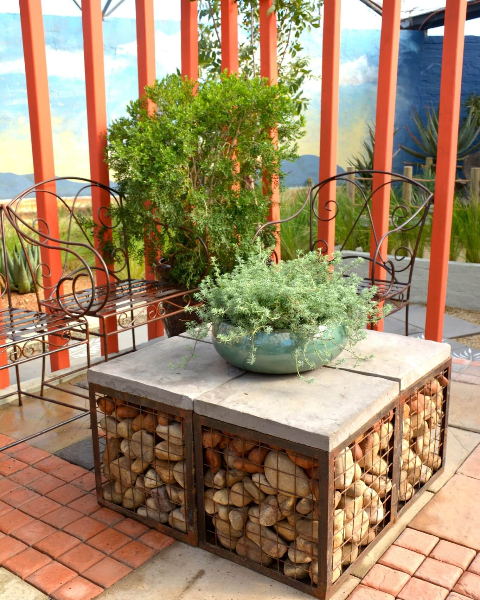
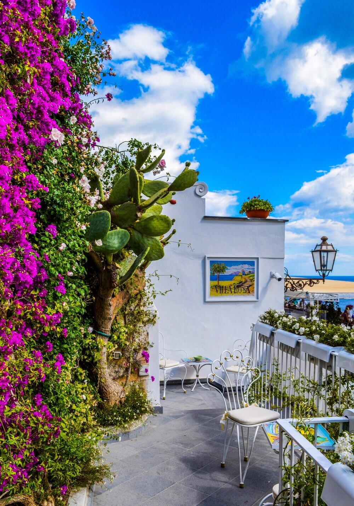

Paradise Gardens
Design Your Garden
Succulent Garden
 My website is designed for those who would love to have their perfect garden space, who love spending time in their gardens and who would love a garden space, but don’t know what to use and were to use it. It will draw many people as it will allow them to have full control of what they want to use and when they want to use it. Often people’s gardens are the last thing on their mind, as it costs users an arm and a leg just to get a landscaper to fix it up. Users will be able to filter through all types of Garden spaces, allowing them to find what best suits their needs. Such as a person who might be living on the second floor, but has a big balcony they can use, or a person who just wants to build a fire pit in an area of their garden.
Users will be able to select and choose from multiple design ideas, as they look to manipulate these ideas to fit their gardens, they will then be able to source the plants and hard landscaping used, so they may be able to plan when and how they want to build their garden space, users will also be able to filter through their budget, on how much they are willing to spend on their garden at the current time. This will help the users find plants and elements to fit their budget.